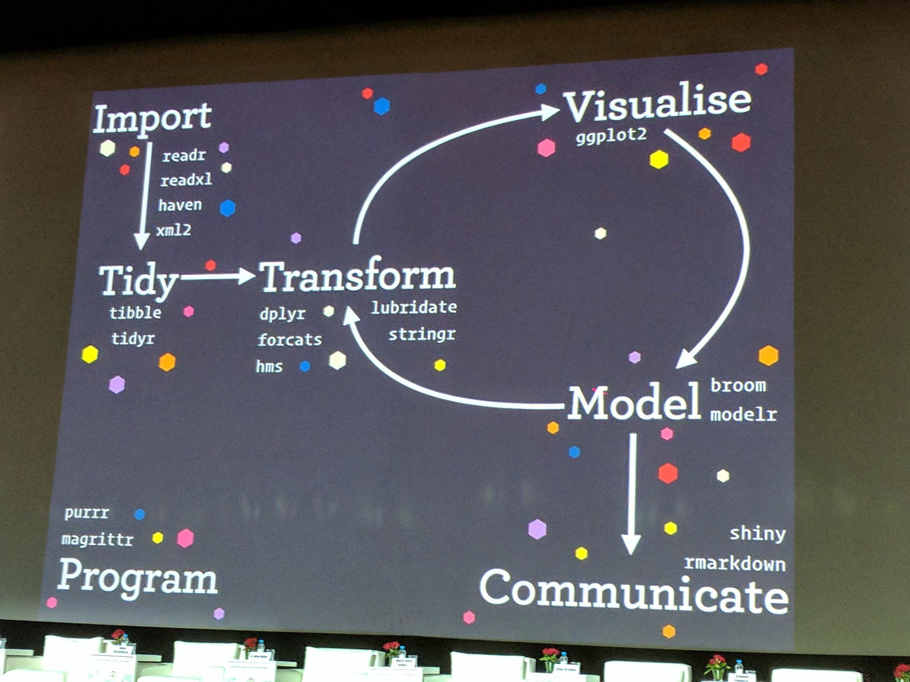

Openscapes Mindset
The Openscapes mindset is about moving away from lonely, individual science and towards science that is more efficient, open, collaborative, inclusive and kind.
Slides that have been presented during Champions Program Cohort Calls:
Please also see the above slides as this chapter is developed more.
Open data science tools, practices, & communities exist and are powerful and empowering, and game-changing for science. They enable us to do better science in less time. They are like the Force from Star Wars:
- More powerful than you ever imagined
- Enable you to broaden the scope of the questions you can ask
- You can be a Jedi to others: pass forward what you’ve learned
- You can join & build diverse communities of allies (not all allies are Jedis)
We can harness this power for science more broadly. We can create the culture that we want to be a part of – towards kinder science. We can do this with the Openscapes mindset:
- Be efficient, open, collaborative, inclusive, and kind
- Reframe data analysis as a collaborative effort rather than an individual burden or personal craft
- Redefine collaborators & community: Future You, Future Us
- Think like a team: share imperfect work and learn together
- Beyond your own discipline, and online
- Reimagine challenges: Expect there is a better way
- Iterate with confidence, agency, & community
- You’re not alone, it’s not too late
Our approach to help develop this mindset is by focusing on the following:
- Data science as a discipline
- Open as a way to work
- Group members as a team
- Collaborators and community (redefined) as a way to learn
- The Internet as an underleveraged tool for science
Data science as a discipline
Alternative title: “Data science is a thing”.
No matter what your study system or your question, to Do Your Science you will need to get your data into analytical software, wrangle it (tidy and transform), and make sense of it visually and with models. Very important here: tidy your data first, don’t build your whole analysis around whatever weird format your data may have come in. We’ll talk about tidy data in more detail another day.

There are concepts, theory, and tools for thinking about and working with data
Just like a field chemistry has concepts for things like moleculte, theory for how they work, and tools for studying them, so does data science — for data.
Emphasis on communication
It is incredible what is possible on the communication front. Watch this one-minute video called What is RMarkdown? to blow your mind.
Not just for “big data” or AI or machine learning
You can use data science theory and tools no matter the size or context of your data.
Your study system is not unique when it comes to data
Think about your data separately from your study system. Don’t confound them or it will be really hard to ask for help.
Expect there is a way to do what you want to do.
This will help you find commonalities and unite you with other lab members and beyond.
Distinguish data questions from research questions, learn how to ask for help
Open data science tools exist
Tools to match data science theory

They exist to streamline working with data
And they are developed by actual people – nice people!
My advice
Expect there is a better way
If you’re making the same plot 10 times, stop.
Don’t confound data science with your science. Expect that someone has had your problem before or done what you want to do.
Divorce your science question from the data science question
Focus on the operations for the data, not your hypothesis
Google your question (ask for help)
Articulate it, and identify useful solutions Trusted urls, recent dates
Open as a way to work
Open science as a way to be more efficient and streamlined
Not an added ask at publication to share your data
It’s not only about sharing data. It’s about how you work, who you include, and the tools that you use.
External memory (personal and collective)
Easier on/offboarding
Find solutions faster – learn to talk about your data
Build confidence – skills are transferable beyond your science
Be empathic and inclusive – grow a network of allies
Lab members as a team
Science is collaborative. Not heads down elbows out.
Focus on what unites lab members, not what sets them apart
Think of the lab horizontally as skillsets & needs instead of vertically as science bins
Instead of the skills you have when you come to the lab determining how you will be able to Do Science, have shared practices in the lab and paths to onboard new people to work that way as well.
Learn with collaborators and community (redefined)
Communities for learning, teaching, and mentorship.
Helps overcome isolation, self-taught bad practices, apprehension
Stevens et al. 2018 ### Your most important collaborator is Future You
Cannot emphasize this enough. Work now so that you can succeed later (whether that’s this afternoon or 4 years from now)
Communities beyond the colleagues in your field
Learn from, with, & for others
The internet as an underleveraged tool for science
Twitter for learning
Follow selectively, listen & learn (e.g. #rstats)
Additional reading
- Biased by default: exploring discrimination in research code - Abby Cabunoc Mayes Bioinformatics Community Confference Keynote 2020